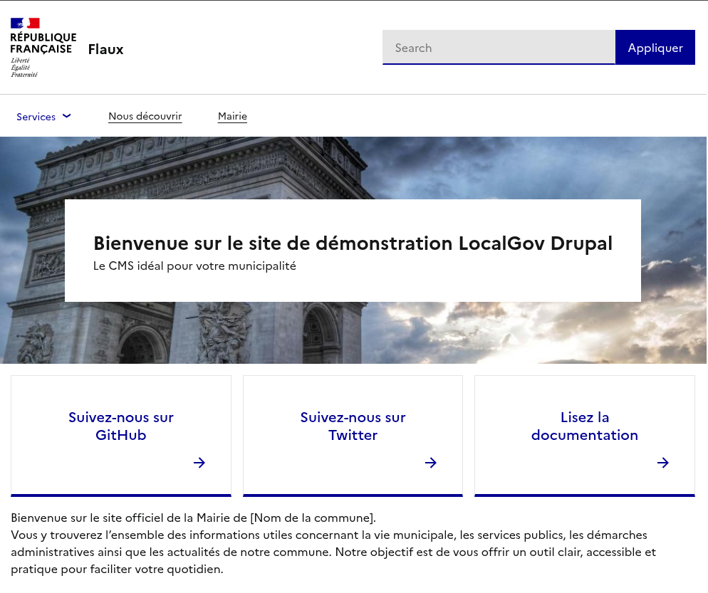

Votre Mairie Ici
Offrez à votre mairie un site web innovant et à la pointe de la technologie. Contactez-nous et découvrons ensemble les solutions adaptées à vos besoins.
Si vous souhaitez en savoir plus sur LocalGov Drupal en français, obtenir une démonstration, savoir comment démarrer, connaître les options de développement professionnel et d'hébergement, contactez notre partenaire en France, Code Enigma.
Nous sommes en mesure de proposer des solutions adaptées à tous les budgets et toutes les tailles de collectivités locales, des préfectures aux petits villages. Vous pouvez utiliser le design gratuit, basé sur le Système de Design de l'État (DSFR), ou commander votre propre identité visuelle.

Offrez à votre mairie un site web innovant et à la pointe de la technologie. Contactez-nous et découvrons ensemble les solutions adaptées à vos besoins.
Greenwich est un grand arrondissement de Londres qui accueille une population diversifiée dans un environnement urbain.
Visitez le siteCanterbury est une ville rurale de taille moyenne dotée d'un budget modeste, mais qui doit gérer un ensemble complet de services.
Visitez le siteNewark & Sherwood est un district rural situé au centre de l'Angleterre, qui a commencé à utiliser LGD pour promouvoir ses attractions touristiques.
Visitez le site